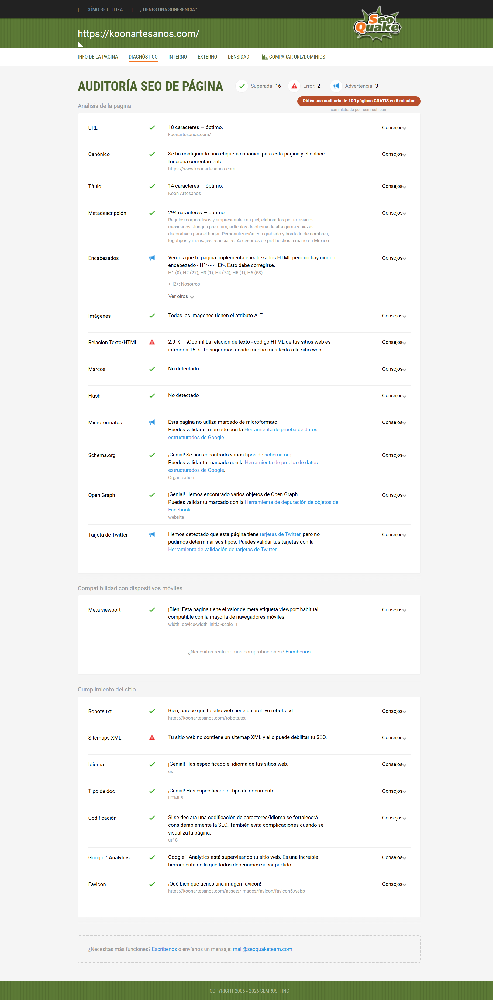
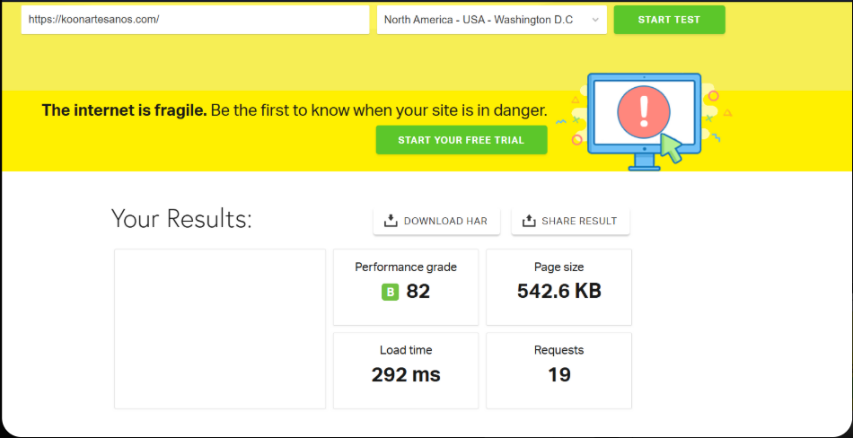
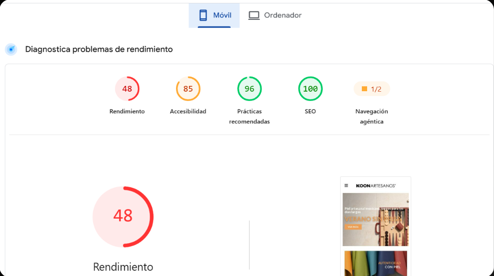

Revisamos koonartesanos.com y lo comparamos con la tienda anterior de Shopify, con las mismas herramientas, el mismo día y en las mismas condiciones. Todo lo que sigue son mediciones reales: ninguna cifra es estimada.
Mediciones del 1 de septiembre de 2026Hay tres direcciones publicando el mismo catálogo al mismo tiempo: koonartesanos.com (el sitio nuevo), store.koonartesanos.com y koonartesanos.myshopify.com (la tienda Shopify, todavía activa y visible en buscadores).
SEOQuake revisa una veintena de puntos en la portada de cada sitio y los clasifica en aprobados, avisos y errores. El sitio nuevo aprueba más puntos que la tienda anterior.
| Qué se revisó | Tienda Shopify | Sitio nuevo |
|---|---|---|
| Idioma declarado | Inglés (incorrecto) | Español |
| Ficha de negocio para Google | No tiene | Sí |
| Contenido de la portada | 201 palabras | 847 palabras |
| Mapa del sitio para buscadores | Sí | No existe |
| Proporción de texto en la página | 22,6 % | 2,9 % |
| Título principal de la portada | Sí | No hay |
En las capturas verás una palomita verde junto al título de 14 caracteres y a la descripción de 294. SEOQuake usa límites muy amplios; Google corta los títulos alrededor de 60 caracteres y las descripciones alrededor de 160. Por eso los contamos como puntos a mejorar aunque la herramienta los dé por buenos.

El sitio nuevo está mucho mejor construido: pesa cinco veces menos y descarga ocho veces menos archivos. Pero en celular tarda demasiado en mostrar la imagen principal, y ahí es donde entra la mayoría de los clientes.
| Calificación de velocidad | Tienda Shopify | Sitio nuevo |
|---|---|---|
| Pingdom (nota general) | D · 66 | B · 82 |
| PageSpeed en computadora | 65 de 100 | 79 de 100 |
| PageSpeed en celular | 51 de 100 | 48 de 100 |
| Tiempo hasta ver la imagen principal en celular | 20,5 s | 16,7 s |
Pingdom dice 292 milisegundos y PageSpeed dice 16,7 segundos. No se contradicen. Con una página que pesa apenas 542 KB, la lentitud no puede venir del tamaño de las imágenes: la imagen de portada no viaja en la primera carga, se pide después de que el teléfono descarga y ejecuta todo el código. En computadora eso es instantáneo; en un celular de gama media con datos móviles son quince segundos de pantalla vacía.
La consecuencia es buena noticia: se arregla cambiando el orden en que carga la página, no comprimiendo fotos. Es un ajuste acotado, no un rediseño.
Nota: la lentitud en celular no la causó la mudanza. La tienda de Shopify era peor (20,5 s), y por un motivo distinto: cargaba 2,9 MB en 159 archivos por las aplicaciones instaladas encima de la plantilla.


Mientras la tienda vivía en Shopify, la plataforma se encargaba sola del certificado, las actualizaciones y los respaldos. En un sitio propio esas tareas pasan a ser responsabilidad de quien lo administra. No son un problema: son una lista que hay que atender.
El sitio publica su Aviso de Privacidad conforme a la ley mexicana de protección de datos, con responsable identificado, domicilio del área de datos personales y canal para revocar el consentimiento.
La seguridad de un servidor no se puede comprobar desde fuera: hace falta acceso al hosting. Preferimos dejarlo señalado como pendiente antes que publicar una cifra estimada. Es la única parte del diagnóstico que sigue abierta.
www, y que avise antes de vencer.En Shopify existía una página de políticas de servicio y devoluciones. Hay que confirmar que esté publicada también en el sitio nuevo: además de ser una obligación frente al consumidor, es de las páginas que más consultan quienes están por comprar un regalo corporativo.
Mismo caso para el resto de páginas informativas que vivían en la tienda anterior: sobre nosotros, bolsa de trabajo y la página de la tienda de Prado Norte.
Ocho acciones, ordenadas por lo que más mueve la aguja. Las seis primeras son las que conviene atacar en las próximas semanas.